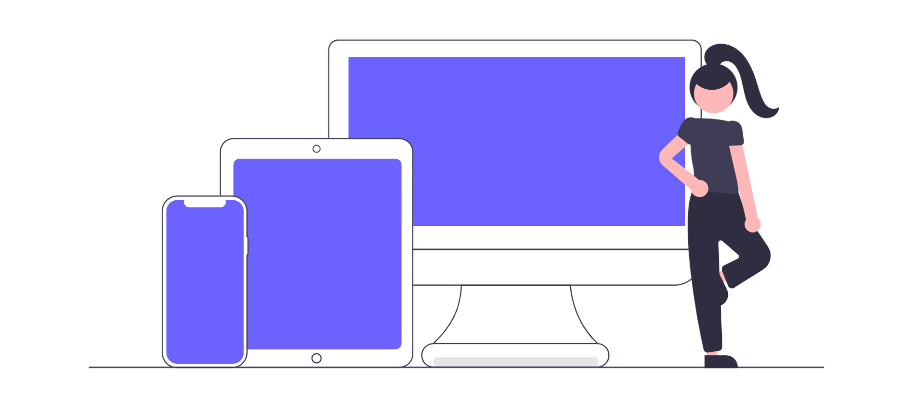

Responsive Web Design
Responsive Web Design allows a website to adjust its layout for different screen sizes and devices.

Flexbox
Flexbox can organize content in rows or columns and adjust the position of items when screen space changes. WebWise uses Flexbox for its navigation and header.
CSS Grid
CSS Grid organizes content into rows and columns. WebWise uses CSS Grid for the topic cards on the homepage.
Media Queries
Media queries allow CSS styles to change at different screen sizes. WebWise changes its navigation and topic layout on smaller screens.
Responsive Images
Responsive images resize based on the available screen space so they do not extend outside the page.